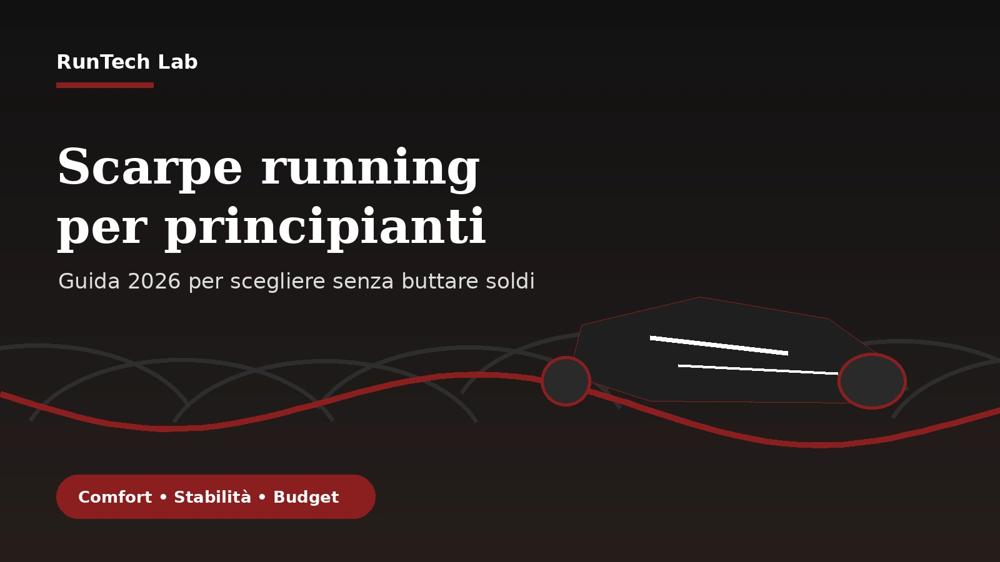

In breve
- La prima scarpa running deve essere comoda, stabile e facile da usare su più tipi di allenamento.
- Non serve comprare subito un modello da gara o con piastra in carbonio.
- Drop, peso e stack sono utili, ma non valgono più della calzata reale sul piede.
- Un budget medio spesso basta per iniziare bene senza inseguire il top di gamma.
- Il verdetto RunTech Lab: scegli una daily trainer neutra e versatile, poi valuta scarpe più specifiche solo dopo alcune settimane di corsa.
Da dove partire davvero
Il primo errore è pensare che una scarpa possa risolvere tutto. Una buona scarpa aiuta, ma non sostituisce progressione, recupero e tecnica di base. Se inizi a correre dopo mesi o anni di poca attività, la priorità è costruire continuità. Per questo una scarpa troppo aggressiva, rigida o specialistica può diventare controproducente: magari è veloce, ma non ti accompagna bene nei ritmi facili, nelle camminate alternate alla corsa o nelle prime uscite su asfalto.
Per un principiante ha senso cercare una scarpa da allenamento quotidiano, spesso chiamata daily trainer. È la categoria più equilibrata: abbastanza protettiva per i lenti, abbastanza leggera per qualche variazione, abbastanza semplice da usare senza dover cambiare modello ogni giorno. Non è la scelta più spettacolare, ma spesso è quella che ti fa correre più a lungo.
Comfort, calzata e stabilità
Il comfort è importante, ma non deve essere confuso con morbidezza estrema. Una scarpa molto morbida può sembrare fantastica nei primi minuti, ma diventare instabile quando sei stanco o quando aumenti i chilometri. La sensazione giusta è diversa: il piede deve sentirsi accolto, ma non perso. Il tallone non deve scivolare, l’avampiede non deve essere compresso e la base deve darti sicurezza in appoggio.
La stabilità non riguarda solo chi prona. Anche un runner neutro può beneficiare di una piattaforma prevedibile, soprattutto all’inizio. Se la scarpa ti fa “ballare” o ti costringe a correggere continuamente l’appoggio, non è ideale come primo acquisto. Meglio una scarpa un po’ meno emozionante ma più affidabile.
Drop, stack e peso: cosa guardare senza fissarsi
| Parametro | Cosa significa | Come usarlo da principiante |
|---|---|---|
| Drop | Differenza di altezza tra tallone e avampiede | Un drop medio è spesso più facile da gestire nelle prime uscite. |
| Stack | Altezza complessiva della piattaforma | Più stack può dare protezione, ma non deve togliere stabilità. |
| Peso | Quanto pesa la scarpa | Conta, ma all’inizio comfort e calzata valgono di più. |
| Categoria | Daily trainer, max cushion, gara, trail | Per iniziare scegli quasi sempre daily trainer o trainer protettiva. |
Quanto spendere per la prima scarpa
Non serve partire dal modello più costoso. Per molti principianti il miglior rapporto qualità/prezzo si trova nella fascia media, soprattutto su modelli dell’anno precedente ancora validi. Spendere troppo presto può essere un errore perché non conosci ancora le tue preferenze: potresti scoprire dopo un mese che vuoi più spazio davanti, più stabilità, meno morbidezza o una scarpa diversa per i lunghi.
Il consiglio pratico è fissare un budget ragionevole e cercare una scarpa versatile. Meglio investire in costanza, calze buone e progressione intelligente che comprare subito una super scarpa da gara. Il top di gamma ha senso quando sai già cosa vuoi ottenere.
Per chi è consigliata una daily trainer
- A chi corre da poco e vuole una scarpa unica per quasi tutte le uscite.
- A chi alterna corsa e camminata nelle prime settimane.
- A chi corre su asfalto o pista ciclabile e vuole protezione senza eccessi.
- A chi non sa ancora se preferisce scarpe morbide, reattive o molto stabili.
- A chi vuole imparare a correre con continuità prima di cercare prestazioni.
Per chi non è consigliata una scarpa troppo specialistica
- A chi cerca una sola scarpa per tutto ma compra un modello da gara molto rigido.
- A chi inizia da zero e sceglie una max cushion molto alta senza sentirsi stabile.
- A chi compra una scarpa minimal senza adattamento graduale.
- A chi decide solo in base al colore, allo sconto o alla moda del momento.
Errori da evitare
- Comprare la stessa scarpa di un amico senza considerare peso, passo, appoggio e obiettivo.
- Provare le scarpe solo da fermi e non camminarci almeno qualche minuto.
- Scegliere una taglia troppo precisa: in corsa il piede può gonfiarsi.
- Confondere “morbida” con “adatta”: una scarpa comoda in negozio può non essere stabile in corsa.
- Usare una scarpa nuova subito per un lungo o per una gara.
Pro e contro
| Pro di una scelta versatile | Contro da accettare |
|---|---|
| Ti permette di correre spesso senza complicare la rotazione. | Non sarà la scarpa più veloce per lavori intensi o gare. |
| Riduce il rischio di comprare un modello troppo specifico. | Potrebbe sembrarti meno emozionante rispetto ai modelli più pubblicizzati. |
| Funziona bene per lenti, prime uscite e progressione graduale. | Dopo qualche mese potresti voler affiancare una scarpa più leggera o più protettiva. |
Alternative da considerare
Tra le categorie da valutare ci sono le daily trainer classiche, le trainer più protettive e alcune max cushion stabili. Le prime sono ideali per chi vuole equilibrio; le seconde aiutano chi cerca più comfort sui lenti; le terze possono funzionare se la base è ampia e sicura. Non serve fissarsi su un solo marchio: Nike, ASICS, Brooks, Saucony, New Balance, Adidas e Hoka hanno tutte modelli adatti ai principianti, ma la calzata cambia molto.
La vera alternativa alla scarpa sbagliata è provare con calma. Se puoi, vai in negozio nel pomeriggio, porta le calze che userai per correre e verifica che ci sia spazio davanti alle dita. Una scarpa corretta deve sparire dal pensiero dopo i primi minuti.
Verdetto RunTech Lab
Sintesi finale: per iniziare a correre nel 2026, la scelta più intelligente è una scarpa da allenamento quotidiano, comoda ma non molle, protettiva ma non instabile, semplice ma non povera. Non devi cercare subito la scarpa più veloce: devi trovare quella che ti fa uscire tre volte a settimana senza fastidi inutili.
Per chi ha senso: una daily trainer equilibrata ha senso per chi sta costruendo abitudine, alterna corsa e camminata, corre su asfalto e vuole capire il proprio stile prima di investire in modelli più specifici.
Per chi non ha senso: questa scelta è meno indicata se hai già esigenze molto precise, corri forte, fai trail tecnico o sai di volere una scarpa da gara. In quel caso serve una valutazione più mirata.
Valutazione pratica: se sei principiante, compra meno marketing e più equilibrio. La scarpa migliore è quella che ti permette di correre con regolarità, non quella che promette miracoli.
FAQ
Quanto devono durare le prime scarpe running?
Dipende da peso, appoggio, superfici e modello. In generale conviene controllare usura della suola, perdita di comfort e sensazioni diverse in corsa. Non aspettare che la scarpa sia completamente distrutta.
Meglio scarpa neutra o stabile?
Se non hai indicazioni specifiche, parti da una scarpa neutra ma stabile nella sensazione. Se hai fastidi ricorrenti o dubbi importanti sull’appoggio, meglio una valutazione in negozio specializzato o con un professionista.
Posso usare le scarpe da palestra per correre?
Per qualche minuto sì, ma non è la scelta ideale. Le scarpe da running sono pensate per impatti ripetuti e movimento in avanti. Se vuoi correre con continuità, una scarpa specifica ha più senso.
Nota editoriale
Questa guida è pensata per runner amatoriali e principianti. Non sostituisce una valutazione medica o biomeccanica in caso di dolore, infortuni o problemi specifici. L’obiettivo è aiutarti a fare una scelta più consapevole prima del primo acquisto.